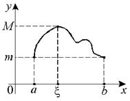

Теорема Ролля (о нуле производной)

Если:
1˚. функция  – непрерывна на
отрезке
– непрерывна на
отрезке  ,
,
– непрерывна на
отрезке ,2˚. на интервале  существует производная
существует производная  ,
,
существует производная ,3˚. значения функции на концах отрезка совпадают, ,
то существует точка  такая, что .
такая, что .
такая, что .Если функция удовлетворяет условию теоремы Ролля, то в
некоторой точке отрезка касательная к графику параллельна оси  .
.
.